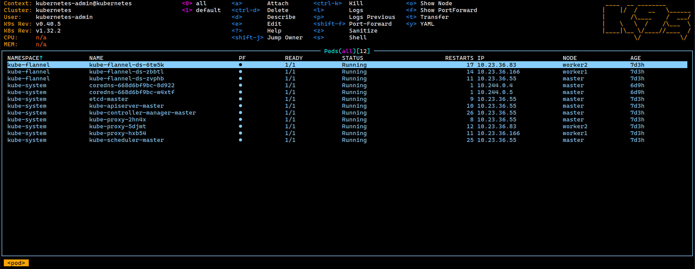

K9s: Terminal UI for Kubernetes
K9s is a powerful terminal-based UI for interacting with Kubernetes clusters. It provides an intuitive interface to navigate, observe, and manage your applications and resources.

Why Use K9s?
K9s offers several advantages over traditional kubectl commands:
- Real-time Monitoring: Live updates of cluster resources
- Intuitive Navigation: Easy keyboard shortcuts and commands
- Resource Management: Quick access to logs, shell, and resource editing
- Cluster Context Switching: Seamless switching between multiple clusters
- Resource Filtering: Powerful search and filtering capabilities
- Plugin System: Extensible with custom plugins
- Resource Metrics: CPU/Memory usage visualization
Installation
Using Package Managers
# Using apt (Recommended)
curl -fsSL https://pkgs.k9s.dev/key.gpg | sudo gpg --dearmor -o /usr/share/keyrings/k9s-archive-keyring.gpg
echo "deb [signed-by=/usr/share/keyrings/k9s-archive-keyring.gpg] https://pkgs.k9s.dev/deb stable main" | sudo tee /etc/apt/sources.list.d/k9s.list
sudo apt update
sudo apt install k9s
# Using snap
sudo snap install k9s
# Using dnf
sudo dnf config-manager --add-repo https://pkgs.k9s.dev/rpm/k9s.repo
sudo dnf install k9s
# Alternative: Direct RPM installation
VERSION=$(curl -s https://api.github.com/repos/derailed/k9s/releases/latest | grep tag_name | cut -d '"' -f 4)
curl -LO https://github.com/derailed/k9s/releases/download/${VERSION}/k9s_Linux_amd64.rpm
sudo rpm -ivh k9s_Linux_amd64.rpm
# Using pacman
sudo pacman -S k9s
# Using yay (AUR)
yay -S k9s-bin
Using Binary Release
# Download latest binary
VERSION=$(curl -s https://api.github.com/repos/derailed/k9s/releases/latest | grep tag_name | cut -d '"' -f 4)
curl -LO https://github.com/derailed/k9s/releases/download/${VERSION}/k9s_Linux_amd64.tar.gz
# Extract and install
tar xzf k9s_Linux_amd64.tar.gz
sudo install -o root -g root -m 0755 k9s /usr/local/bin/k9s
# Verify installation
k9s version
Using Container Image
# Run using Docker
docker run --rm -it -v ~/.kube/config:/root/.kube/config ghcr.io/derailed/k9s
# Run using Podman
podman run --rm -it -v ~/.kube/config:/root/.kube/config ghcr.io/derailed/k9s
Installation Best Practices
- Always verify GPG keys and signatures when installing via package managers
- Keep K9s updated to benefit from the latest features and security fixes
- Consider using the container image in restricted environments
- Back up your K9s configuration before upgrading
Basic Usage
Starting K9s
# Start with default context
k9s
# Start with specific context
k9s --context my-cluster
# Start in a specific namespace
k9s -n kube-system
Key Features and Commands
Navigation
0-9: Switch to namespace:: Enter command mode/: Enter filter modeesc: Go back/Clear filterctrl-a: Show all resourcesctrl-d: Delete resourcectrl-k: Kill pod?: Show help
Resource Views
# Access different resources using commands
:pods # View pods
:deployments # View deployments
:services # View services
:nodes # View nodes
:configmaps # View configmaps
:secrets # View secrets
Pod Management
# While in pod view
l # View logs
s # Shell into container
d # Describe pod
e # Edit pod
y # YAML view
ctrl-k # Kill pod
Cluster Context Management
# Switch contexts
:context # List available contexts
ctrl-c # Open context switch menu
Multi-Cluster Configuration
Using Different Kubeconfig Files
-
Default Configuration:
# K9s uses default kubeconfig at ~/.kube/config k9s -
Specific Kubeconfig:
# Use a specific kubeconfig file k9s --kubeconfig=/path/to/kubeconfig # Set environment variable export KUBECONFIG=/path/to/kubeconfig k9s -
Multiple Kubeconfig Files:
# Merge multiple kubeconfig files export KUBECONFIG=~/.kube/config-cluster1:~/.kube/config-cluster2 k9s
Creating Cluster-Specific Aliases
# Add to your ~/.bashrc or ~/.zshrc
alias k9s-prod="k9s --kubeconfig=/path/to/prod-kubeconfig"
alias k9s-dev="k9s --kubeconfig=/path/to/dev-kubeconfig"
alias k9s-staging="k9s --kubeconfig=/path/to/staging-kubeconfig"
Customization
Configuration File
K9s uses a configuration file located at ~/.k9s/config.yml:
k9s:
refreshRate: 2
maxConnRetry: 5
enableMouse: false
headless: false
logoless: false
crumbsless: false
readOnly: false
noIcons: false
logger:
tail: 100
buffer: 5000
sinceSeconds: 60
fullScreenLogs: false
textWrap: false
showTime: false
currentContext: minikube
currentCluster: minikube
clusters:
minikube:
namespace:
active: default
favorites:
- default
- kube-system
view:
active: pods
featureGates:
nodeShell: false
shellPod:
image: busybox:1.31
command: []
args: []
namespace: default
Skin Customization
Create a custom skin at ~/.k9s/skin.yml:
k9s:
body:
fgColor: dodgerblue
bgColor: black
logoColor: orange
prompt:
fgColor: cadetblue
bgColor: black
suggestColor: dodgerblue
info:
fgColor: orange
sectionColor: white
Best Practices
1. Resource Organization
- Use namespaces as logical groupings for resources
- Create custom resource views for different workflows
- Utilize labels and filters for efficient resource management
- Set up port-forwarding for frequently accessed services
2. Performance Optimization
- Increase refresh rate in large clusters (>1000 pods)
- Filter by namespace when working in specific areas
- Use readonly mode for monitoring to reduce API calls
- Limit resource views to relevant namespaces
3. Security Considerations
- Maintain separate kubeconfig files for each environment
- Enable readonly mode for audit and review tasks
- Follow the principle of least privilege with RBAC
- Regularly rotate cluster credentials
- Use context-specific configurations
4. Workflow Efficiency
- Master essential keyboard shortcuts (
:,/,ctrl+a) - Configure custom skins for better visibility
- Set up command aliases for common operations
- Use hotkeys for frequent namespace switches
- Configure persistent views for regular tasks
5. Cluster Management
- Monitor resource utilization with built-in metrics
- Set up custom resource views for different roles
- Use benchmarks for performance monitoring
- Configure alerts for critical resources
6. Troubleshooting
- Enable logging for debugging sessions
- Use describe and events for detailed resource info
- Set up custom views for error tracking
- Configure proper log buffer sizes
Troubleshooting
Common Issues
-
Connection Problems:
# Check kubeconfig k9s info # Verify cluster access kubectl cluster-info -
Performance Issues:
# Adjust refresh rate in ~/.k9s/config.yml k9s: refreshRate: 5 # Increase refresh interval -
Resource Access:
# Check RBAC permissions kubectl auth can-i --list